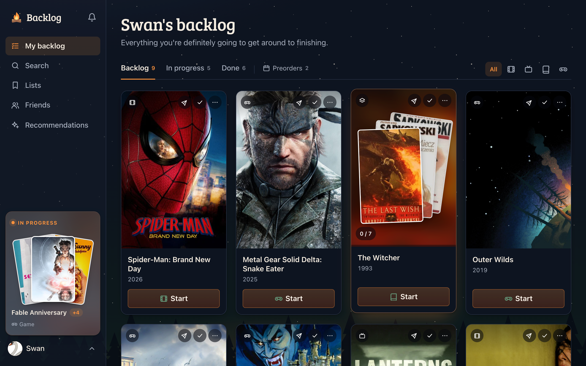

Backlog
An all-in-one media backlog tracker for movies, tv shows, books, & games. Discover new content and connect with friends to share recommendations.
Backlog is my first AI built full stack application. Claude wrote most of the code while I drove the product direction, design/UX, and setting up third party services.
- React
- TypeScript
- Express
- PostgreSQL
- Vercel
- Supabase